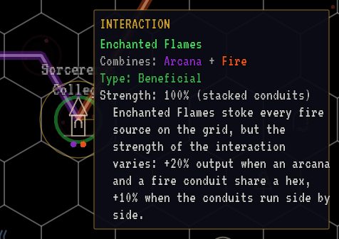
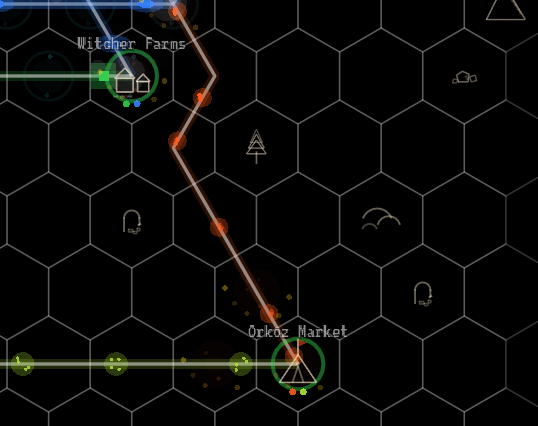
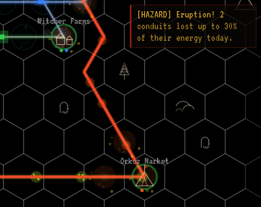
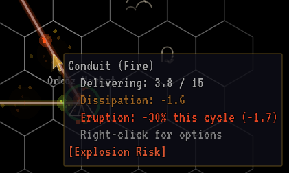

Run two different mana types too close together and they react. Some reactions earn you money. Some cost you mana. One just makes everyone's laundry damp. There are eight in all.
How interactions work
Stacked: full strength. Two conduits of different types on the same hex react at 100%.
Adjacent: half strength. Different types on neighboring hexes react at 50%.
Any farther apart: nothing happens.
Interactions are checked once per game day. A few details worth knowing:
What matters is the conduit's type and route, not how much is flowing. An idle conduit still reacts.
A conduit includes the hexes it starts and ends on. Two conduits of different types arriving at the same building share that building's hex, so they react there at full strength. A Wizard Academy fed arcana, fire and water hosts three interactions on its own hex. A hybrid's output conduit starts on its hex too, so it reacts with the hybrid's inputs.
Raw mixed and merged lines carry two types, so they react with themselves on every hex they cross, with no second conduit needed.
Insulated conduits (anything leaving a Filter) never react, and are immune to eruptions.
Reactions of the same pair on neighboring hexes can share a zone, which uses the strongest reaction inside it. A long shared run is still many zones, and each hazard zone rolls for eruptions on its own.
Click any reacting hex to open the inspector. It names the interaction, explains it, and shows whether it's at 100% (stacked conduits) or 50% (adjacent conduits). Tooltips show the results, too: a boosted source, a customer earning a bonus, a discounted Filter, and a conduit that lost mana to an eruption, listed separately from its distance loss.

Click a reacting hex to see which interaction it is and whether it's at full strength (stacked) or half (adjacent).
Reacting hex (the academy, where both lines end)
Inspector: the interaction and what it does
Strength: 100% stacked, 50% adjacent
Two different energy types are reacting here. Conduits sharing a hex react at full strength; conduits in adjacent hexes react at half strength. Click a reacting hex any time to see what the interaction does.
Earth and water mixing enriches the land. Farms within 3 hexes of where the lines meet earn more revenue: +25% when the conduits share a hex, +12.5% when they run side by side.
Stacked
+25%
Adjacent
+12.5%
Range
3 hexes
Applies to Farming Villages within 3 hexes of the zone's center. Several zones don't add up; a village gets the best one.
A Farming Village needs earth and water anyway, so its own two supply lines trigger this on its hex.
Farmers near the Greendale junction noticed their turnips growing to the size of wheelbarrows after a nearby earth conduit sprang a leak into the irrigation canal. The farmers don't care. They're rich.
Enchanted Flames stoke every fire source on the grid: +20% output when an arcana and a fire conduit share a hex, +10% when the conduits run side by side.
Stacked
+20% fire
Adjacent
+10% fire
Boosts the output of fire producers: Fire Geysers, Dragon Lairs and fire-producing mixed sources. The boost reaches fire producers across the whole map, not only those near the zone. Several zones don't add up; the strongest counts.
Watch the cap. A boosted Fire Geyser makes 36 mana a day, but two basic conduits still only carry 15 mana each, so the extra is wasted. The tooltip says Boost capped by conduit capacity: upgrade the conduits to use it.
The first recorded instance occurred when a junior technician routed an arcana conduit past the Anvilgate district. The resulting purple-tinged fireballs were spectacular. The singed eyebrows of three blacksmiths were less so. AG&W now considers it a 'feature.'
Gas seeping through earth veins crystallizes valuable minerals. Each contiguous zone pays income however long it runs: 5 GC/day when the conduits share a hex, 2.5 GC/day when they run side by side.
Stacked
+5gc/day
Adjacent
+2.5gc/day
See Passive income for how zones are counted. In short: one payment per separate crossing, however long the crossing is.
A fed Dwarven Forge earns it on its own hex, where its earth input meets its gas output.
The Deepdelve Mining Company discovered this effect by accident when a gas line ruptured underground. Instead of the expected explosion, they found the tunnel walls crusted with valuable crystals. They now send AG&W a thank-you basket every quarter.
Arcana-infused water cleans out every Filter on the grid: upkeep is halved when the conduits share a hex, and cut by a quarter when they run side by side.
Stacked
−50% upkeep
Adjacent
−25% upkeep
Discounts the upkeep of every Filter you own, wherever it is. The strongest zone counts. Filter tooltips show the discount as (Purification -N%).
A Wizard Academy needs both arcana and water, so it often sets this up by itself.
Wizard Academy researchers discovered that arcana-charged water spontaneously purifies itself, which they called 'a breakthrough in thaumaturgical sanitation.' The Sanitation Department called it 'finally, something useful from the wizard nerds.' Relations between the departments remain frosty.
Fire near gas conduits is dangerously volatile. Each reacting hex has a 3% chance per day to erupt and drain the lines through it: 30% energy loss when the conduits share a hex, 15% when they run side by side. Upgraded conduits take half. Long shared runs erupt often.
A raw Flare Pit line, or a merged fire + gas line, is a separate 3% roll on every hex. A 15-hex line erupts on roughly 37% of days.
Avoid it by keeping fire and gas at least two hexes apart, or by filtering one of them so it's insulated.
A fed Dwarven Forge sits in one: its fire input and gas output meet on its hex. A Filter on the Forge's gas output takes that line out of the reaction.
AG&W Safety Regulation 7.4.1 states: 'Under no circumstances shall fire and gas conduits be routed alongside (and NEVER atop) one another.' AG&W Safety Incident Report 7.4.1a through 7.4.1z document every time someone ignored this regulation. The filing cabinet is fireproof.
Fire and water proximity produces thick steam clouds. Cosmetic only, no gameplay penalty.
Completely harmless. It never costs you anything, so route fire and water together freely. Its first appearance posts an [ENV.NOTICE] rather than a hazard warning.
The steam is harmless but dramatic. Residents near affected junctions have complained about perpetual fog, damp laundry, and an inability to see their own front doors. The tourism board, however, markets the area as 'Mystical Mist Valley' and charges admission.
Fire superheating earth creates volatile magma vents. Dwarven Forges within 3 hexes of where the lines meet earn more revenue, and each reacting hex has a 2% chance per day to erupt: +30% revenue and 15% eruption loss when the conduits share a hex, +15% and 7.5% when they run side by side. Upgraded conduits take half the loss.
Forge bonus
+30% / +15%
Chance
2%/day
Stacked loss
15%
Adjacent loss
7.5%
The revenue bonus applies to Dwarven Forges within 3 hexes of the zone's center (+30% stacked, +15% adjacent).
A Dwarven Forge needs fire and earth, so its own supply lines create this on its hex. When it erupts, every exposed conduit at the Forge loses mana, including the Forge's own gas output.
A raw Caldera line, or a merged fire + earth line, is Magma Vents along its whole length.
The first magma vent eruption was mistaken for a dragon attack. After the town guard spent three hours shooting arrows at a crack in the ground, AG&W dispatched an engineer who explained the situation. The guard captain still insists it was 'a very flat dragon.'
Gas bubbling up through water leaves mineral-laden springs. Each contiguous zone pays income however long it runs: 3 GC/day when the conduits share a hex, 1.5 GC/day when they run side by side.
When a gas conduit leaked into the Clearwater Reservoir, locals braced for disaster. Instead, the water developed remarkable healing properties. The local bathhouse now charges fifty gold per soak, and AG&W receives a modest licensing fee for what they officially classify as 'controlled infrastructure synergy.'
Each hazard zone rolls once per day. The chance (3% or 2%) is the same at full and half strength; only the size of the loss is halved for adjacent conduits.
When a zone erupts, every conduit passing through it loses that share of its flow, whatever type it carries. A water line that happens to cross a fire + gas zone gets hit too.
The loss lasts until the next day's check. Affected lines flash red, the screen shakes, and a [HAZARD] Eruption! notice tells you how many conduits lost energy and how much. A hit conduit's tooltip shows Eruption: -N% this cycle, separate from its distance loss.
Upgraded conduits are hardened and take half the loss: 15% instead of 30% in an Explosion Risk zone, 7.5% instead of 15% in Magma Vents. Insulated conduits take none.
A Battery downstream of a conduit that erupted covers the dip from its charge.
Every hex of a long line is its own zone with its own roll. The chance that something erupts on a given day climbs quickly with length: about 37% per day for a 15-hex raw fire + gas line.

An ordinary day

The day it erupts
Before and during an eruption. Every conduit in the zone loses part of its flow until the next day's check, and flashes red.
Hazard zone: fire and gas meet on the bazaar (Explosion Risk)
The conduits through the zone
Hazard notice (after only)

An eruption shows on the conduit's tooltip, separate from its distance loss.
Distance loss
Eruption loss, shown separately
The zone it's in
Why it matters
A one-day 30% loss can drop a customer below its need, which costs revenue and breaks a Content streak. If an operation's goal is a long streak, a fire + gas crossing is a lottery ticket you don't want.
Zones that touch each other count as one, paid once at the strongest strength among them. Two lines sharing a 20-hex stretch get paid once, the same as a single crossing. So does a 20-hex merged earth + gas trunk.
Separate crossings that don't touch are paid separately. To earn more, make more distinct crossings.
A [TREASURY] notice reminds you of your passive income every 5 days.
Unlocking entries in the in-game manual
The in-game Field Manual (C) starts with every interaction [WARDED]. An entry unseals when:
you start an operation where both of its mana types are present, or
the reaction happens on your grid for the first time, which also posts a [FIELD.SCAN], [HAZARD] or [ENV.NOTICE] notice.
Since all five types appear together by the fifth operation, the full set is usually unsealed by then. Unsealed entries stay unsealed.